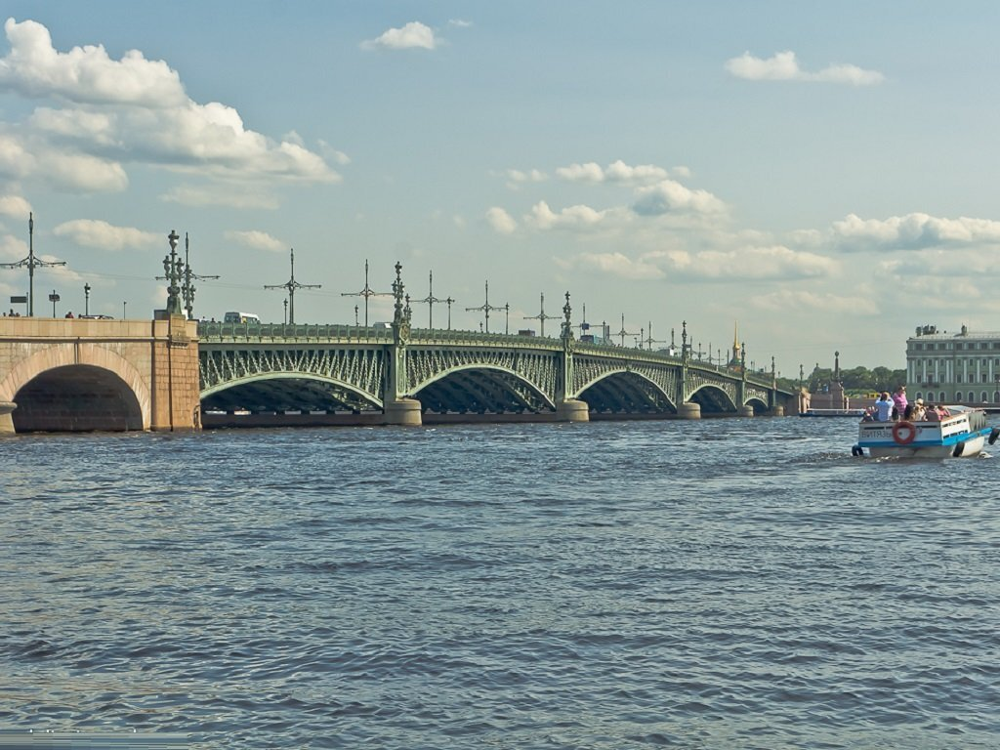
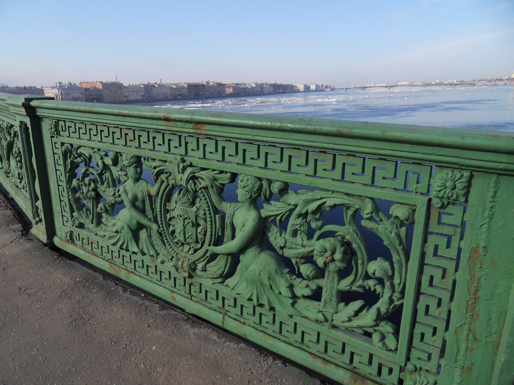
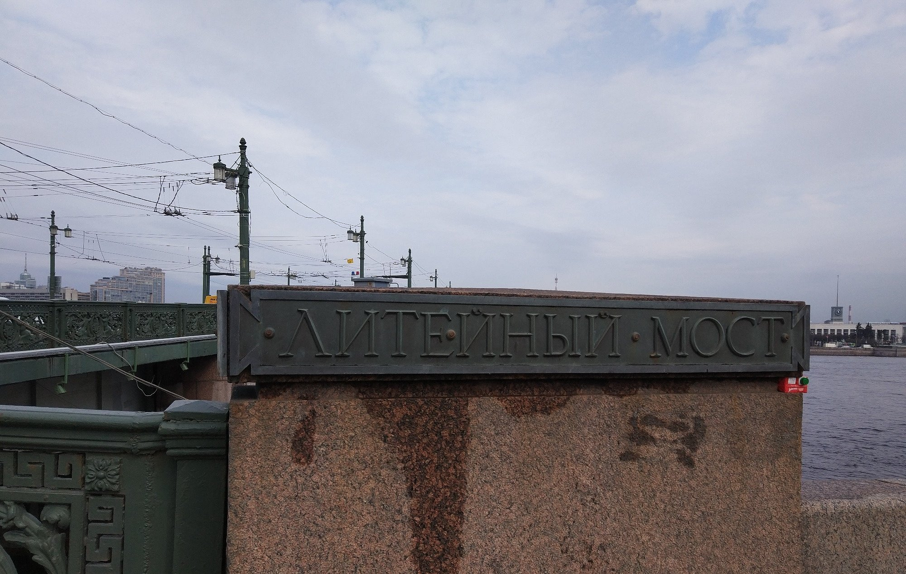

Литейный мост и камень Атакан
Легенда
Из всех многочисленных мостов Петербурга именно Литейный считается самым аномальным. Строительство началось в 1875 году, а через год во время работ, проводимых на глубине, погибло пятеро рабочих. В 1877 году произошел взрыв неизвестного происхождения, который унес жизни еще девяти строителей.

После того, как мост был достроен, он стал притягивать к себе людей, склонных к суициду. С тех пор в городе появились легенды о призраках самоубийц, появлявшихся на мосту время от времени. Очевидцы рассказывают, что в туманные ночи на мосту можно увидеть полупрозрачные фигуры, стоящие у перил и глядящие в чёрную воду. Иногда они исчезают, как только на них падает свет фонарей.

Жители Петербурга связывали трагические события на мосту с камнем, который находится на дне Невы как раз в этом месте. Говорят, что древний валун, носящий имя Атакан, раньше был объектом поклонения и жертвоприношений у племен, населявших эти земли. Веками он лежал на дне реки, впитывая кровь жертв и тёмную энергию, а когда началось строительство моста, пробудился. Как ни странно, в наше время именно под Литейным мостом чаще всего случаются аварии на воде: катера и яхты внезапно теряют управление, а водолазы жалуются на странное чувство тревоги и головокружение при погружении в этом районе.
Что было на самом деле
Литейный мост строился в 1875-1879 годах, это был второй постоянный мост через Неву. При строительстве действительно случались трагедии: гибель рабочих, обвал кессона, взрыв. Эти случаи тщательно документированы и связаны с типичными рисками масштабных строек XIX века — работа велась на большой глубине, при сложных грунтовых условиях, без современных систем безопасности.

На дне Невы в районе моста действительно есть большой валун, обнаруженный при гидрографических исследованиях, но никаких археологических подтверждений его культового значения не существует. Название «Атакан» — скорее всего, поздний фольклор. Аварии под мостом объясняются сложной гидрографией Невы в этом месте: здесь сильное течение и водовороты, что создаёт повышенную опасность для судоходства. Что касается самоубийц — увы, любой высокий мост в большом городе притягивает людей в состоянии отчаяния, и Литейный здесь не уникален.
← Назад к карте